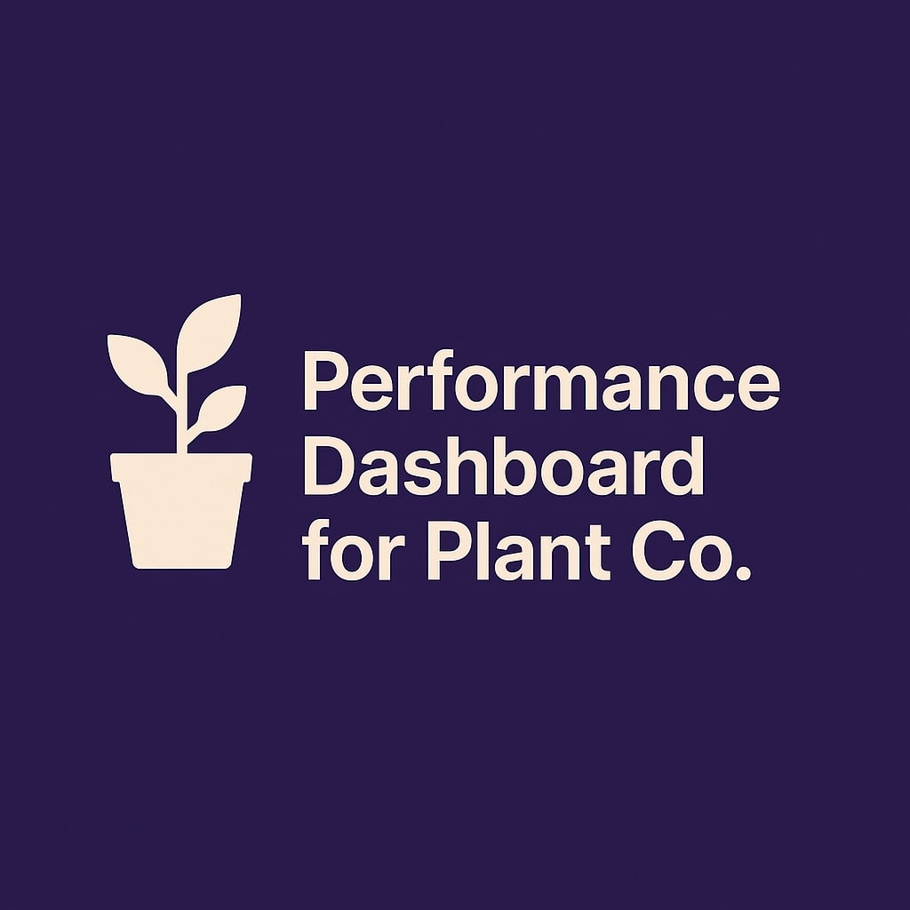
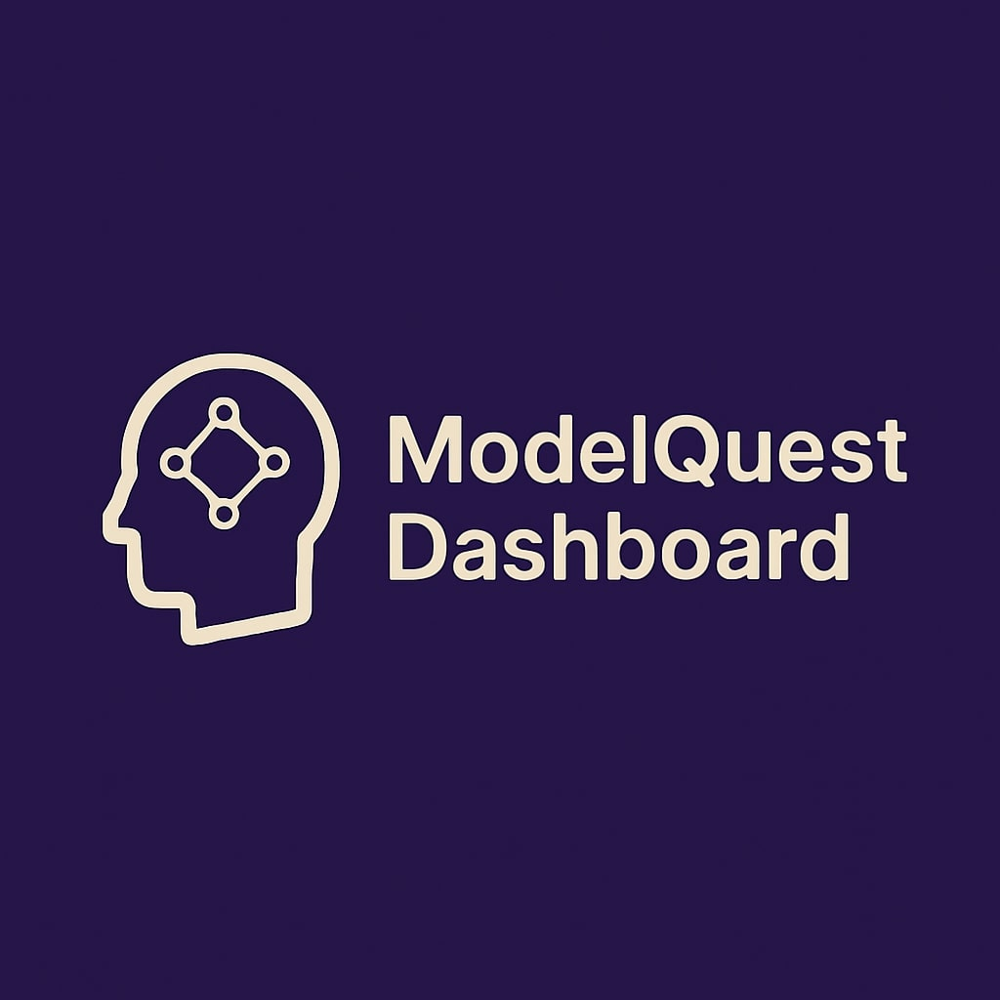

Macroeconomic Insights Dashboard
ETL + BI pipeline using Databricks, Delta Lake, and Power BI to visualize real-time inflation, unemployment, retail activity, and GDP trends with custom KPIs.
I turn complex data into clear, actionable stories that help teams build better products, sharper strategy, and measurable results.
Scroll down to explore live projects and see insight in action.
ETL + BI pipeline using Databricks, Delta Lake, and Power BI to visualize real-time inflation, unemployment, retail activity, and GDP trends with custom KPIs.
Power BI dashboard turning 9 years of threat data into 24/7 situational awareness for SecOps teams.
Analyzed 57 GB of REES46 transactions in Snowflake & Power BI; surfaced cart‐abandon hotspots and lifted monthly GMV by 7 %.

Interactive BI tracking GP %, sales fluctuations, and under‐performing regions to realign strategy using Power BI.

Power BI exploration of AI‑model evolution—training hours, launch years, and performance leaps—all in one interactive view.
I combine rigorous analytics with business context, moving from raw data to decisions that improve revenue, cost, and user‑experience.
Design cloud ETL pipelines (Airflow · dbt · Snowflake) that deliver trusted, timely data.
Unlock insights with SQL window functions and Python ML where it adds value.
Craft Tableau / Power BI stories that move leadership from data to decision.
Build KPI frameworks that align analytics with revenue and retention goals.
Translate needs into technical specs and iterate quickly on feedback.
Measure, learn, and improve to keep pipelines fast and insights relevant.
Ready to upgrade your BI? Let’s chat.